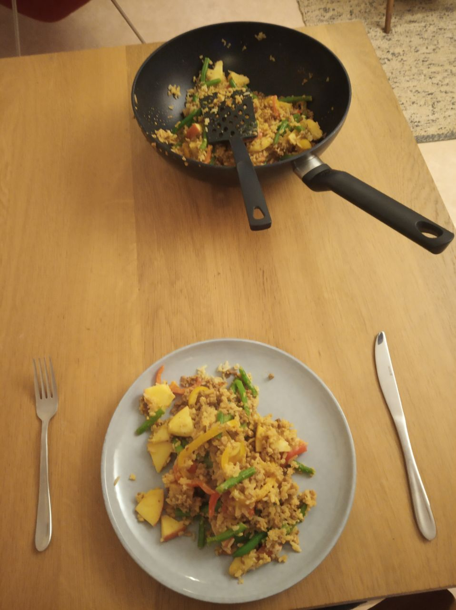

Koken met Jan
Kip madras, maar dan heel anders.
Wat heb je nodig?
- Kokosmelk (200 ml)
- Vegatarisch gehakt (gewoon een pakje, ik weet niet hoeveel dat is)
- Sperziebonen
- Paprika (Geel. Dat ik wel zo vrolijk)
- Appel (Friszoet, Jonagold bijvoorbeeld)
- Kerrie
- Zilvervliesrijst
- Kurkuma
- Bosui
- 1 kleine ui
- knoflook
Tijd om te koken!
Gewoon de pakjes goed lezen en koken die handel! Ik zou nog wel ff zout en peper toevoegen en nog iets van chili poeder o.i.d. Lekkerrr!
Als de boel niet in de fik is gevlogen, moet het er ongeveer zo uitzien:

Eigen notities
Handig, voor als je er bijvoorbeeld een eigen twist aan wil geven.